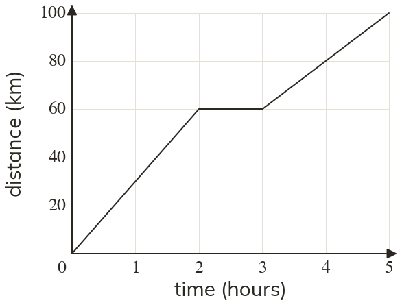

Westonbirt Maths · Direct and Inverse Proportion
Travel Graphs
Name: ______________________ Date: ____________
1
Find the speed of each moving stage.
2
A stage rises from to with time in minutes and distance in km. Find the speed in km/h.
3
A cyclist rides at km/h for hours, starting from Where does that stage of her graph end?
4
Find the average speed for the whole journey in question
5
One runner's graph passes through and another's through and in minutes and km. Who is faster?
Ext
A car's graph goes from to stays flat for minutes, then returns to the start at km/h. When does it get back?
